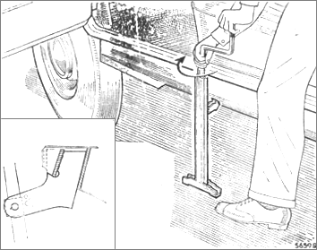

Jacking the Car
These instructions show how to use the jacking tool to lift your car.
The jack supplied with the vehicle is designed to lift one side of the vehicle at a time.
Jacking the car

- Remove the rubber plug from the socket below the door on the exterior of the car.
- Insert the arm of the jack into the socket.
The jack should lean slightly outwards at the top to allow for the radial movement of the vehicle as it is raised.
-
Hold the jack bar up into the jacking bracket with one hand and turn the jack screw with your other hand until the car begins to lift.